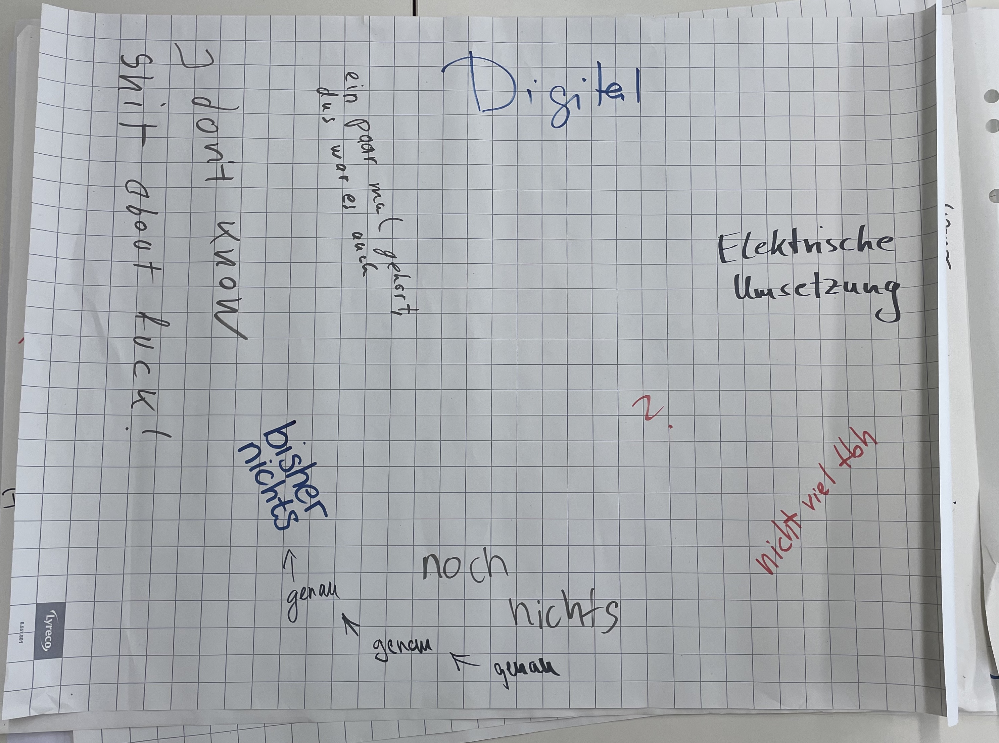

Till Grallert, Samantha Tirtohusodo

Digital Humanities? Gibt’s doch gar nicht!
Sahle („Digital Humanities?“ 2015)
it is largely due to the apparently instrumental or utilitarian value of the digital humanities (their ability to provide liberal arts majors with digital skills that can be turned into productive jobs) that university administrators, foundation officers, and government agencies have been so eager to fund DH projects, create DH undergraduate and graduate programs, and hire DH faculty.
Grusin („The Dark Side of Digital Humanities“ 2014), 83
DH is the application of computational tools to research questions rooted in the humanities and the scrutiny of computational tools and digital media with methodologies rooted in the humanities.
My own working definition
What is important today is not that we are doing work with computers, but rather that we are doing the work of the humanities, in digital form. The field is now much broader than it once was, and includes not only the computational modeling and analysis of humanities information, but also the cultural study of digital technologies, their creative possibilities, and their social impact.
Schreibman, Siemens, und Unsworth („Preface“ 2016), xvii
[…] there are central concerns among digital humanists which cross disciplinary boundaries. This is nowhere more evident than in the representation of knowledge-bearing artifacts. The process of such representation – especially so when done with the attention to detail and the consistency demanded by the computing environment – requires humanists to make explicit what they know about their material and to understand the ways in which that material exceeds or escapes representation. […]
The process that one goes through in order to develop, apply, and compute these knowledge representations is unlike anything that humanities scholars, outside of philosophy, have ever been required to do. This method, or perhaps we should call it a heuristic, discovers a new horizon for humanities scholarship, a paradigm as powerful as any that has arisen in any humanities discipline in the past – and, indeed, maybe more powerful, because the rigor it requires will bring to our attention undocumented features of our own ideation. Coupled with enormous storage capacity and computational power, this heuristic presents us with patterns and connections in the human record that we would never otherwise have found or examined.
Schreibman, Siemens, und Unsworth („The Digital Humanities and Humanities Computing: An Introduction“ 2004), xxvi
For us, digital humanities simply represents a community of scholars and teachers interested in using or studying technology. We use humanities techniques to study digital cultures, tools, and concepts, and we also use computational methods to explore the traditional objects of humanistic inquiry.
Battershill und Ross (Using Digital Humanities in the Classroom 2017), 3-4
Computing in the humanities / DH is old!
Beware of foundational myths and hegemonic narratives!
Alliance of Digital Humanities Organisations (ADHO), 2004 by ALLC/ACH
European Association for Digital Humanities (eadh): 1973 as Association for Literary and Linguistic Computing (ALLC)
Plain-text und Kommandozeile: Digital Humanities und die (Wieder-)Aneignung der Produktionsmittel
Pitchen Sie als Gruppe mindestens einen Vorschlag zu
Die Punkte werden auf den folgenden Folien erklärt
Sie brauchen eine Idee für ein Spiel - Sie dürfen auch mehrere haben. Diese Idee sollte beinhalten:
Wie wollen Sie ihre gamifizierte Usersurvey umsetzen?